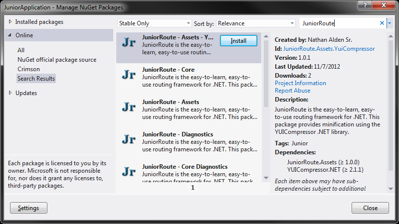

Quick Start
Getting started with JuniorRoute is very easy. This page shows you the few simple steps required to get JuniorRoute integrated with an ASP.net Web application. Note that this tutorial was written using Visual Studio 2012 with C#, so some steps may vary depending on your Visual Studio version and language selection.
Step 1 - Create a New ASP.NET Empty Web Application Solution
Create a new ASP.NET empty Web application solution. Be sure to target at least .NET Framework 4.

Step 2 - Remove All References From the New Project
Remove all the references Visual Studio has added. Your project won’t need most of them.

Step 3 - Add NuGet Packages
This tutorial uses all JuniorRoute NuGet packages. JuniorRoute packages can be found in the Manage NuGet Packages dialog by searching for JuniorRoute.
Add all JuniorRoute packages to your project.


Step 4 - Add a New Global Application Class
JuniorRoute attaches to the ASP.net pipeline from within the global application class’ constructor.
Add a new global application class called Global and change its code to the following:
using System.Web;
using Junior.Route.AspNetIntegration;
namespace JuniorApplication
{
public class Global : HttpApplication
{
public Global()
{
JuniorRouteApplication.AttachToHttpApplication(this);
}
}
}
Step 5 - Add a Configuration Class
Add a new class called JuniorRouteConfiguration and change its code to the following:
using Junior.Route.AspNetIntegration;
namespace JuniorApplication
{
public class JuniorRouteConfiguration : JuniorRouteApplicationConfiguration
{
public JuniorRouteConfiguration()
{
}
}
}
Step 6 - Add a Pre-application Start Method
JuniorRoute configuration must be registered before the ASP.net pipeline creates any global application class instances. This prevents configuration from being created over and over. To accomplish this, we’ll use ASP.net’s pre-application start method mechanism.
Add a new class called JuniorRoute to your project and change its code to the following:
using Junior.Route.AspNetIntegration;
namespace JuniorApplication
{
public static class JuniorRoute
{
public static void Start()
{
JuniorRouteApplication.RegisterConfiguration<JuniorRouteConfiguration>();
}
}
}
Step 7 - Add the PreApplicationStartMethod Attribute to AssemblyInfo.cs
Adding the [assembly:PreApplicationStartMethod] attribute instructs ASP.net to call the Start method before creating any global application class instances.
Replace the contents of AssemblyInfo.cs with the following code:
using System.Reflection;
using System.Web;
using JuniorApplication;
[assembly:AssemblyTitle("JuniorApplication")]
[assembly:PreApplicationStartMethod(typeof(JuniorRoute), "Start")]
Step 8 - Configure Auto-routing
Now that bootstrapping is taken care of, it’s time to configure auto-routing. Auto-routing will automatically generate routes given a set of conventions.
Open the JuniorRouteConfiguration class and change its code to the following:
using System.Reflection;
using Junior.Common;
using Junior.Route.AspNetIntegration;
using Junior.Route.AspNetIntegration.AspNet;
using Junior.Route.AspNetIntegration.ResponseGenerators;
using Junior.Route.AspNetIntegration.ResponseHandlers;
using Junior.Route.AutoRouting;
using Junior.Route.AutoRouting.Containers;
using Junior.Route.AutoRouting.ParameterMappers;
using Junior.Route.Routing;
using Junior.Route.Routing.Caching;
namespace JuniorApplication
{
public class JuniorRouteConfiguration : JuniorRouteApplicationConfiguration
{
public JuniorRouteConfiguration()
{
// Declare the root endpoint namespace
const string endpointNamespace = "JuniorApplication.Endpoints";
// Create dependencies
var guidFactory = new GuidFactory();
var httpRuntime = new HttpRuntimeWrapper();
var restrictionContainer = new DefaultRestrictionContainer(httpRuntime);
var responseGenerators = new IResponseGenerator[]
{
new MostMatchingRestrictionsGenerator(),
new UnmatchedRestrictionsGenerator(),
new NotFoundGenerator()
};
var responseHandlers = new IResponseHandler[] { new NonCacheableResponseHandler() };
var parameterMappers = new IParameterMapper[] { new DefaultValueMapper() };
var cache = new NoCache();
// Provide conventions to a new AutoRouteCollection instance
AutoRouteCollection autoRouteCollection = new AutoRouteCollection()
.RestrictionContainer(restrictionContainer)
.Assemblies(Assembly.GetExecutingAssembly())
.NameAfterRelativeClassNamespaceAndClassName(endpointNamespace)
.IdRandomly(guidFactory)
.ResolvedRelativeUrlFromRelativeClassNamespacesAndClassNames(endpointNamespace)
.RestrictHttpMethodsToMethodsNamedAfterStandardHttpMethods()
.RestrictRelativeUrlsToRelativeClassNamespacesAndClassNames(endpointNamespace)
.RespondWithMethodReturnValuesThatImplementIResponse(parameterMappers);
// Generate routes
IRouteCollection routeCollection = autoRouteCollection.GenerateRouteCollection();
// Create an HTTP handler
var httpHandler = new AspNetHttpHandler(routeCollection, cache, responseGenerators, responseHandlers);
// Set the handler in the base class
SetHandler(httpHandler);
}
}
}
Step 9 - Add an Endpoint Class
We’re almost finished! Add a new folder to the project called Endpoints. Notice that the namespace for the folder matches the endpoint namespace specified in your configuration.
Then, add a new class called HelloWorld to the Endpoints folder and change its code to the following:
using Junior.Route.Routing.Responses.Text;
namespace JuniorApplication.Endpoints
{
public class HelloWorld
{
public HtmlResponse Get()
{
return new HtmlResponse(@"<html><body style=""font-size: 3em;"">Hello, world.</body></html>");
}
}
}
Step 10 - Test Your Route!
Run the project in Visual Studio and navigate to the /hello_world path. You’ll see the following page, showing that your route was configured properly:

That’s it! You’re done!
Continue reading if you’d like to integrate JuniorRoute’s diagnostics into your application.
Step 11 - Add Diagnostic Routes
Adding diagnostic routes causes significant changes to occur in your configuration class, so replace its code with the following:
using System.Linq;
using System.Reflection;
using Junior.Common;
using Junior.Route.AspNetIntegration;
using Junior.Route.AspNetIntegration.AspNet;
using Junior.Route.AspNetIntegration.Diagnostics;
using Junior.Route.AspNetIntegration.ResponseGenerators;
using Junior.Route.AspNetIntegration.ResponseHandlers;
using Junior.Route.AutoRouting;
using Junior.Route.AutoRouting.Containers;
using Junior.Route.AutoRouting.ParameterMappers;
using Junior.Route.Diagnostics;
using Junior.Route.Routing;
using Junior.Route.Routing.Caching;
using Junior.Route.Routing.Diagnostics;
namespace JuniorApplication
{
public class JuniorRouteConfiguration : JuniorRouteApplicationConfiguration
{
private readonly IRouteCollection _routeCollection;
public JuniorRouteConfiguration()
{
// Declare the root endpoint namespace
const string endpointNamespace = "JuniorApplication.Endpoints";
// Create dependencies
var guidFactory = new GuidFactory();
var httpRuntime = new HttpRuntimeWrapper();
var urlResolver = new UrlResolver(() => _routeCollection, httpRuntime);
var restrictionContainer = new DefaultRestrictionContainer(httpRuntime);
var responseGenerators = new IResponseGenerator[]
{
new MostMatchingRestrictionsGenerator(),
new UnmatchedRestrictionsGenerator(),
new NotFoundGenerator()
};
var responseHandlers = new IResponseHandler[] { new NonCacheableResponseHandler() };
var parameterMappers = new IParameterMapper[] { new DefaultValueMapper() };
var cache = new NoCache();
// Provide conventions to a new AutoRouteCollection instance
AutoRouteCollection autoRouteCollection = new AutoRouteCollection()
.RestrictionContainer(restrictionContainer)
.Assemblies(Assembly.GetExecutingAssembly())
.NameAfterRelativeClassNamespaceAndClassName(endpointNamespace)
.IdRandomly(guidFactory)
.ResolvedRelativeUrlFromRelativeClassNamespacesAndClassNames(endpointNamespace)
.RestrictHttpMethodsToMethodsNamedAfterStandardHttpMethods()
.RestrictRelativeUrlsToRelativeClassNamespacesAndClassNames(endpointNamespace)
.RespondWithMethodReturnValuesThatImplementIResponse(parameterMappers)
// Add diagnostics routes
.AdditionalRoutes(
DiagnosticConfigurationRoutes.Instance.GetRoutes(
guidFactory,
urlResolver,
httpRuntime,
"_diagnostics",
new AspNetDiagnosticConfiguration(
cache.GetType(),
responseGenerators.Select(arg => arg.GetType()),
responseHandlers.Select(arg => arg.GetType())),
new RoutingDiagnosticConfiguration(() => _routeCollection)));
// Generate routes
_routeCollection = autoRouteCollection.GenerateRouteCollection();
// Create an HTTP handler
var httpHandler = new AspNetHttpHandler(_routeCollection, cache, responseGenerators, responseHandlers);
// Set the handler in the base class
SetHandler(httpHandler);
}
}
}
Run the project in Visual Studio and navigate to the /_diagnostics path. You’ll see the following page, showing that your diagnostics routes were configured properly: